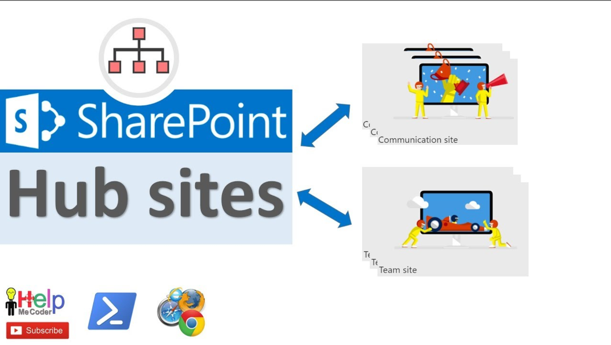

SharePoint hub sites provide an important building block for your intranet. They are the connect factor when organizing families of team sites and communication sites together. One of the key principles of modern intranets based on Microsoft SharePoint is that each unit of work should get a separate site collection. This helps you to manage governance and growth over time. Each communication site and Microsoft 365 group-connected team site is created as a site collection that can have its own permissions. A hub site (most commonly created from a communication site) should also be considered its own unit of work that brings together many other sites. In the past, many organizations used subsites to create connective tissue for their intranets. They used the site collection's shared navigation to connect sites and the hierarchical structure of subsite relationships to nest sites within sites. However, subsites don't give any room for flexibility and change. Since subsites are a physical construct reflected in the URL for content, if you reorganize your business relationships, you break all the intranet relationships in your content. Subsites can also create challenges when it comes to governance because many features (including policy features like retention and classification) in SharePoint apply to all sites within the site collection, whether you want them to or not. This means that you must frequently enable a feature for the entire site collection, even if it's only applicable to one subsite.
Before you start making hubs sites, let's recap the three things hub sites give you: Shared navigation and brand Roll-up of content and search A home destination for the hub Now let's think about the information you're trying to share throughout your intranet, and consider the business outcomes you're trying to enable. An intranet can play many roles in an organization. It's an internally facing site, a place to communicate important news, and a collaboration platform. It's also a way to showcase your corporate culture. It can be the foundation of your digital workplace. An intranet lets you tell stories and share information. Empowering employees with a voice on your intranet can provide a way to move to a culture of collaboration that enables your organization to transform and adapt to change. Many successful intranets include the following elements: Communication: For example, a home page that includes news from around the organization to keep employees informed, overall navigation, links to key tools and information, internal marketing promotions, and a place to engage employees around important topics. Content: A place for the functional parts of the organization, such as Human Resources (HR), Legal, and Information Technology (IT), to offer their services to the rest of the organization. For example, the HR part of the intranet could be where employees can find out how many vacation days they have left, whether their benefits program offers vision or dental coverage, or what training is available for individual roles. The Legal area might be where employees can find a sample non-disclosure agreement they can execute prior to having a conversation with a prospective vendor. Actions and activities: Links to the time-tracking system or the expense report form and a place where managers can approve expenses or timesheets. Collaboration: Places where teams can get work done and where role or topic-based communities can share knowledge and leverage expertise across the organization and with external partners in the extended enterprise. Culture: Stories and places that allow employees to engage or learn, including profiles, communities and clubs, and even images and branding that reflect the organizational structure. Sometimes even the intranet name embodies the culture. For example, an electric utility has an intranet called "The Grid" with messaging and promotions to make sure that "no one works off The Grid." Mobility: The ability for employees to get work done from any device while they're on the go. Search: The ability for employees to find content even if they don't know where it lives. The emphasis for each of these elements can vary based on organizational priorities and to some extent, the digital maturity of the organization. Microsoft 365 provides three main building blocks to help you create your intranet in a way that allows you to configure experiences that align with your organization, your employees, and your readiness. Different organizations will use the building blocks in different ways, but the building blocks themselves reflect common patterns that organizations use to get work done: Team sites (collaboration) Communication sites (communication) Hub sites (connection)
When you add new users, if you don't assign them an admin role then they are in the user role and don't have admin privileges to any of the Microsoft admin centers. But if you need help getting things done, you can assign an admin role to a user. For example, if you need someone to help reset passwords, you shouldn't assign them the global admin role, you should assign them the password admin role. Having too many global admins, with unlimited access to your data and online business, is a security risk. When you sign up for Microsoft 365 Business, you automatically become a global admin. To help manage the business, you can make other people admins as well. In the Microsoft 365 admin center, select Users > Active users. Choose the user you want to make an admin, and then select Manage roles. You can assign users to a role in 2 different ways: You can go to the user's details and Manage roles to assign a role to the user. Or you can go to Roles and select the role, and then add multiple users to it.
Any guests you add to your Microsoft Teams, SharePoint, or Azure Active Directory are also added to the Guest users list in the Microsoft 365 admin center. Guests can attend meetings, view documents and chat in Teams they're invited to. Once a user shows up in the Guest users list, you can remove their access there. To view guest users, in the Microsoft 365 admin center, in the left nav, expand Users, and then choose Guest users.